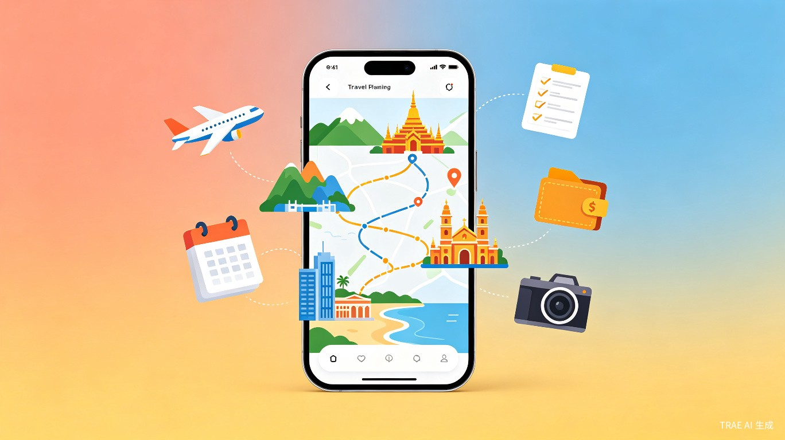
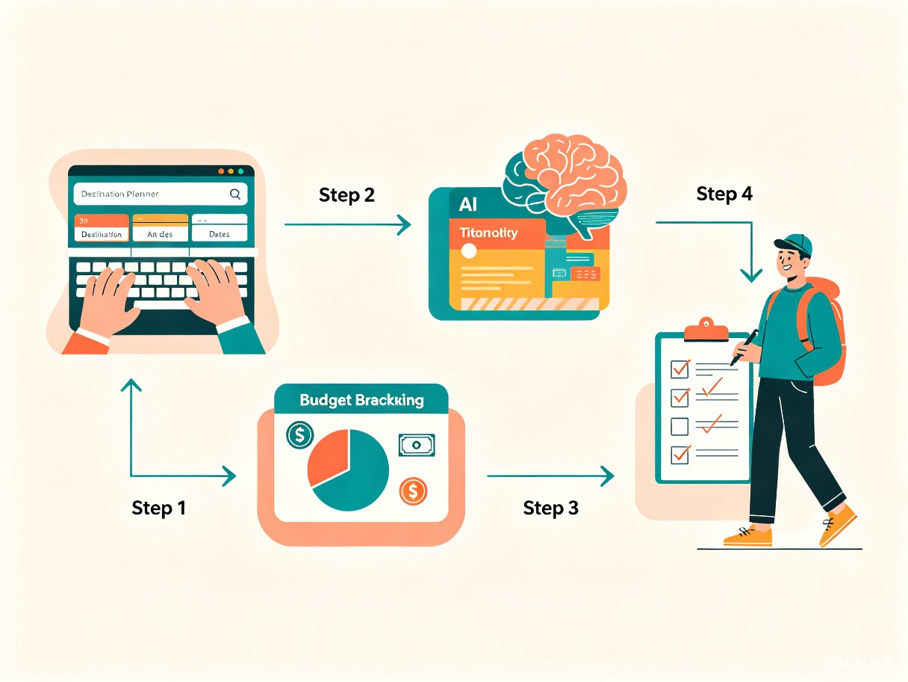

创意介绍
途灵 AI 是一款智能旅行计划生成器。用户只需输入目的地、旅行天数和偏好标签（如美食、文化、自然、购物），AI 即可在数秒内生成一份完整的旅行方案，包含每日行程安排、交通建议、餐饮推荐、预算估算和打卡清单。
产品形态为 Web 应用，用户无需下载安装，打开浏览器即可使用。核心交互流程仅需 3 步：输入 -> 生成 -> 出发。
核心功能
智能行程规划
根据目的地和天数，AI 自动规划每日景点路线，考虑地理位置最优排列，避免走回头路。
预算自动估算
自动生成住宿、交通、门票、餐饮四大类预算明细，支持按经济/舒适/豪华三档调整。
打卡清单生成
基于目的地特色，自动生成必打卡景点、必吃美食、必体验活动清单，支持勾选打卡。
行程智能调整
对某天行程不满意？一键重新生成该日安排，或拖拽调整景点顺序，AI 自动优化路线。
天气与穿搭建议
对接天气 API，根据旅行日期的天气预报推荐穿搭和必备物品清单。
一键分享与导出
支持导出为图片、PDF 或分享链接，方便发给同行伙伴一起参考。
目标用户与痛点
核心用户群：25-40 岁年轻旅行者，包括上班族周末出游、情侣旅行、亲子家庭出游、毕业旅行等群体。
- 攻略耗时耗力：做一次 5 天旅行攻略平均需要 3-5 小时，要在小红书、马蜂窝、携程等多个平台反复比对信息。
- 信息碎片化：景点、交通、住宿、美食信息分散在不同平台，缺乏整体规划，容易遗漏重要安排。
- 预算难以把控：旅行中实际花费经常远超预期，缺乏事前的精准预算参考。
- 行程不灵活：传统攻略是静态的，遇到天气变化或临时想调整时缺乏快速响应能力。
- 小众目的地信息匮乏：热门城市攻略多，但小众目的地或定制化需求（如美食之旅、摄影之旅）很难找到合适参考。
使用流程
输入需求
填写目的地、天数、偏好标签（美食/文化/自然/购物）
AI 生成方案
数秒内生成完整行程、预算、打卡清单
微调优化
对不满意的部分一键重新生成或手动调整
分享出发
导出或分享给同行伙伴，开启旅程

Demo 效果预览
模拟输入
AI 生成结果（摘要）
* 以上为 Demo 模拟效果，实际功能将在初赛阶段完整开发
价值与意义
效率提升
将旅行攻略制作时间从 3-5 小时缩短至 3 分钟。AI 自动整合多平台信息，用户只需确认和微调，大幅降低出行前的准备门槛。尤其对于"想走就走"的短途旅行，实现真正的说走就走。
商业价值
旅行规划是旅游消费的上游入口。产品成熟后可对接酒店预订、门票购买、交通票务等 O2O 服务，实现佣金分成模式。同时用户生成的旅行方案天然具备社交传播属性，可形成 UGC 内容生态。
技术方案
本项目将使用 TRAE Work 作为核心开发工具，充分利用 AI 辅助编码能力快速完成原型开发。
核心亮点：全程使用 TRAE Work 的 Auto 模式进行开发，零手写代码，充分展示 AI 原生开发的能力与效率。
让每一次旅行都从灵感出发
途灵 AI — 你的 AI 旅行规划师，一句话搞定完美行程